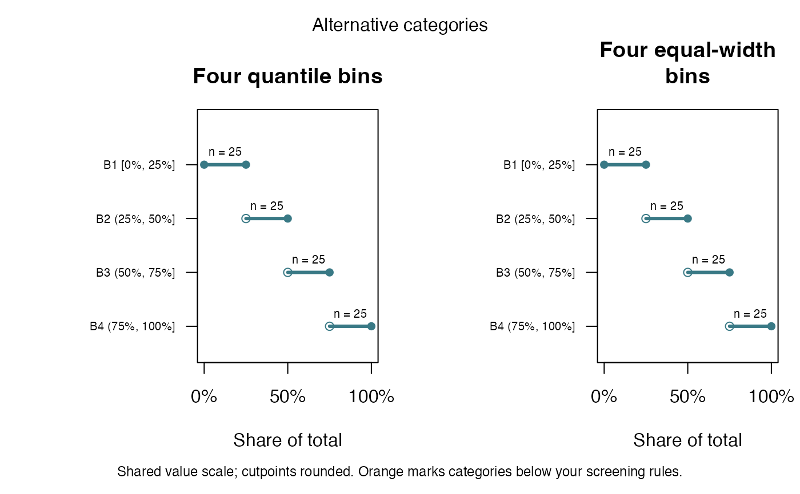

Display Candidate Binning Comparisons
plot.bin_comparison.RdPrint the assessment and summary tables, or plot counts and boundaries on shared axes across schemes.
Usage
# S3 method for class 'bin_comparison'
print(x, digits = 4L, ...)
# S3 method for class 'bin_comparison'
plot(x, type = c("counts", "boundaries"),
schemes = NULL, digits = 3L,
value_format = c("number", "percent"), percent_scale = 100,
scheme_labels = NULL, xlab = NULL, main = NULL, show_counts = TRUE, ...)Arguments
- x
An object returned by
bin_compare().- digits
Significant digits for printed summaries and numeric plot labels. For percentage plot labels, decimal places instead. For plots, a whole number from 1 to 15. Trailing zeros are omitted.
- type
"counts"draws counts on a shared vertical scale and labels each bar with its count."boundaries"draws each interval on a shared horizontal value scale with rounded numeric boundaries in its row label.- schemes
Optional character vector selecting scheme names in display order. Defaults to all schemes. Select fewer schemes for a small graphics device.
- value_format
Boundary axis and cutpoint label format. Default
"number"retains numeric units. Choose"percent"explicitly for percentage labels. This does not format counts as percentages.- percent_scale
Multiplier applied only to percentage labels. Default 100 converts fractions such as 0.25 to 25 percent. Set to 1 if values are already stored as percentages, such as 25 for 25 percent. No scale is inferred from data.
- scheme_labels
Optional named character vector mapping scheme identifiers in
x$diagnosesto display titles. Partial mappings are allowed; unmapped automatic schemes use readable method names and requested interval counts. Unmapped custom names have underscores replaced by spaces. A mapping can include unselected schemes, so it can be reused for different plot subsets.- xlab
Optional boundary-axis label. Defaults to the column name.
- main
Optional overall title. Defaults to a comparison title using
xlab, or the column name ifxlabis not supplied.- show_counts
Logical. Display observation counts above bars or, for boundary plots, as
n = ...above each interval. Defaults to TRUE. Counts include separate-zero and empty categories and always use observation units, even with percentage-formatted boundaries. Set FALSE to hide counts.- ...
Additional arguments to
barplotorplot. Do not override supplied axes, limits, colors, or names. Use the explicit label and title arguments. Unused by the print method.
Details
Orange marks categories below either screening threshold. Zero categories and
empty intervals remain visible. In boundary plots, filled endpoints are included,
open endpoints are excluded, and singleton categories are shown as points.
Observation counts refer to the data used to create the comparison, not to
any later application of its schemes to different data. Counts are centered
above each interval where space allows, with labels moved inward near panel
edges. Line length encodes the value range, not the number of observations.
If zeros are separate, their assignment precedes interval assignment, even if
custom interval boundaries include zero. Printed boundary labels are rounded;
the full-precision values and closure indicators are available in x$bins.
Percentage formatting applies consistently to axis ticks and interval labels.
Bin boundaries, coordinates, assignments, stored scheme names, and comparison
tables are unchanged. For instance, 0.25 is plotted at the original coordinate
but labeled 25 percent with the default percentage scale. Negative percentages
and values above 100 percent are supported when meaningful for the supplied data.
Percentage values whose nonzero magnitude is below 10 to the power of minus
digits are shown using a bound, such as <0.001% or
>-0.001%. Exact zero is displayed as 0%. Increase digits
to distinguish very small boundaries. Labels describe variable values, not sample
percentiles or shares of observations.
Narrow intervals may be difficult to distinguish on a shared scale; inspect
their numeric labels and the bin table. Graphics parameters are restored after
plotting. Use RStudio's Zoom button or a larger graphics device for many panels.
Examples
d <- data.frame(share = seq(0, 1, length.out = 100))
comparison <- bin_compare(d, "share")
plot(comparison, type = "boundaries", value_format = "percent",
scheme_labels = c(quantile_4 = "Four quantile bins",
equal_width_4 = "Four equal-width bins"),
xlab = "Share of total", main = "Alternative categories")

# For percentages stored from 0 to 100, also supply percent_scale = 1.